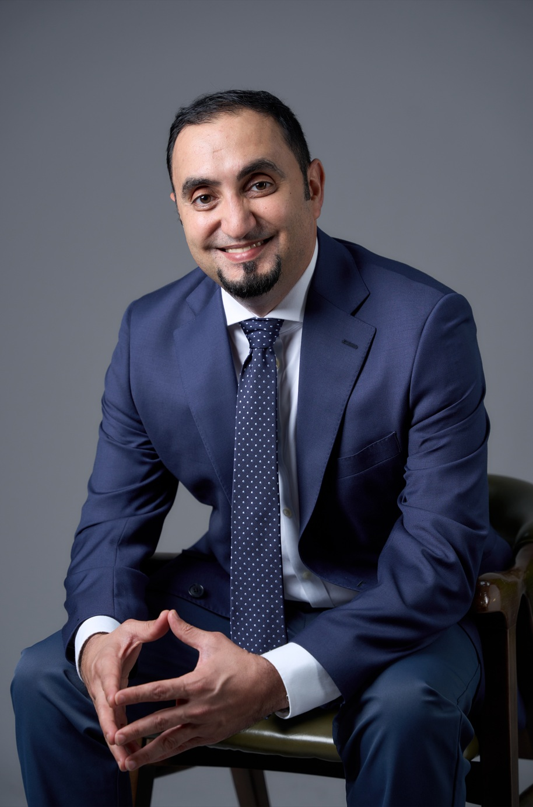

Dr Mo El-Haj
Multilingual NLP, Arabic language technology, large language models, language resources, financial NLP, text summarisation and information extraction.
I develop NLP methods, datasets and research infrastructure for multilingual and under-resourced language settings, with a long-standing focus on Arabic and work spanning English, Spanish, Portuguese, Welsh and other languages. My research connects language technology with domains including finance, health, education and cultural heritage.

Researching language technology across languages, domains and communities
I am the Director of the NLP @ VinUniversity Research Group and a Reader (Associate Professor) in Natural Language Processing at the College of Engineering & Computer Science, VinUniversity, Hanoi. I also hold a visiting research role at Lancaster University.
My doctoral research at the University of Essex focused on Arabic multi-document summarisation. Since then, my work has expanded across multilingual NLP, language resources, information extraction, financial NLP, biomedical applications, text classification and large language models.
A recurring theme across my research is building resources and systems that make language technology more useful for under-resourced languages and domain-specific settings, and releasing datasets, models and tools so that others can build on the work.
Research focus
My work spans core NLP research, multilingual resource development and applied language technology, with particular interest in settings where language, data or domain constraints make standard approaches insufficient.
Multilingual & Low-Resource NLP
Methods and resources for languages that remain under-represented in mainstream NLP research and evaluation.
Arabic NLP
Arabic language resources, summarisation, readability, dialects, text classification and domain-specific language technology.
Large Language Models
Multilingual language modelling, generative AI, model evaluation and adaptation for specialised tasks and languages.
Financial & Domain NLP
Financial narrative processing, information extraction and language technologies for specialised professional domains.
Summarisation & Information Extraction
Automatic text summarisation, structured information extraction, document understanding and evaluation.
Biomedical & Applied NLP
Applications of NLP to health, medicine, education, cultural heritage and other interdisciplinary settings.
Research projects
My current research brings together multilingual NLP, large language models, low-resource language technology, human-centred evaluation and the development of open datasets and research infrastructure. Many of these projects are led through NLP @ VinUniversity and developed with international research partners.
PolicyVerse
Multilingual Multi-Agent LLMs for Policy Reasoning
Developing multilingual retrieval, policy world models and multi-agent reasoning systems for analysing complex policy information across English, Portuguese, Vietnamese and Welsh.
Explore project ↗PolyDrift
Instruction-Language Drift in Multilingual LLMs
Investigating how adapted multilingual instruction-tuned LLMs change their language behaviour, including when models unexpectedly drift away from the language requested by users.
Explore project ↗FreeTxt-Vi
Vietnamese-English Free-Text Survey Analysis
Extending multilingual free-text analysis to Vietnamese through segmentation, sentiment analysis and abstractive summarisation, supported by dedicated benchmarks and open NLP resources.
Explore project ↗ViSaS
Vietnamese Semantic Tagging System
Developing semantic language resources and NLP methods for Vietnamese, supporting richer lexical and semantic analysis of Vietnamese text.
Explore project ↗AraDetox
Arabic Text Detoxification
Developing a large-scale multidialect Arabic resource for offensive language rewriting, meaning preservation and safer text generation, supported by extensive human evaluation.
View resources ↗AraFinNews
Arabic Financial Summarisation with Domain-Adapted LLMs
Research on Arabic financial narrative understanding and summarisation using domain-adapted language models, accompanied by open datasets and models for financial NLP.
View resources ↗Workshops & research initiatives
Alongside my research, I establish and organise international workshops that bring together researchers around emerging areas of NLP, multilingual AI, language resources and applied language technology. These workshops are organised alongside major international conferences and have developed into recurring research communities.
Financial Narrative Processing
A long-running international workshop series bringing together NLP, computational linguistics, finance and accounting research around the processing and understanding of financial narratives.
Visit FNP →AbjadNLP
The Workshop on NLP for Languages Using Arabic Script, connecting research on Arabic, Perso-Arabic and Ajami languages and supporting language communities across Africa, the Middle East and Asia.
Explore AbjadNLP →LLMs4All
LLMs, Big Data and Multilinguality for All explores scalable and inclusive language technologies, with particular emphasis on multilingual and under-resourced language settings.
Visit LLMs4All →AI of X
An interdisciplinary workshop connecting artificial intelligence with healthcare, business, social sciences, security and other domains, while creating opportunities for international academic collaboration.
Visit AI of X →Language resources, datasets, models and tools
I maintain research resources across several repositories and communities so that datasets, code and models remain accessible and reusable.
PhD supervision
My supervision spans multilingual NLP, biomedical language technology, Arabic NLP, readability and source-code summarisation.
Current PhD students
Previous PhD students
Doctoral examination
I have served as an external and internal examiner for doctoral research across UK and international universities.
External PhD examinations
- Dr Reyhaneh Hashempour — University of Essex
- Dr Ethan Bradley — Queen's University Belfast
- Dr Mona Alshehri — University of Sussex
- Dr Abdullah Alsaleh — University of Leeds
- Dr Mary Fouad — University of Sussex
- Dr Haviz Rizwan Iqbal — Information Technology University of the Punjab
- Dr Fatimah Al-Qahtani — King's College London
- Dr Taghreed Tarmom — University of Leeds
- Dr Alaa Alqahtani — University of Birmingham
- Dr Chatrine Qwaider — University of Gothenburg
- Dr Mohammed Hamed Altamimi — Bangor University
- Dr Maher Itani — Sheffield Hallam University
Internal PhD examinations
- Dr Matthew Coole — Lancaster University
- Dr Edward Dearden — Lancaster University
- Dr Lama Alsudias — Lancaster University
- Dr Ronghui Mu — Lancaster University [Chair]
Education & recognition
Education
Awards & professional recognition
Publications from 2007 to 2026
Browse the full publication record, including recent work on multilingual LLMs, Arabic NLP, language resources, summarisation, financial NLP and applied language technology.
Explore publications